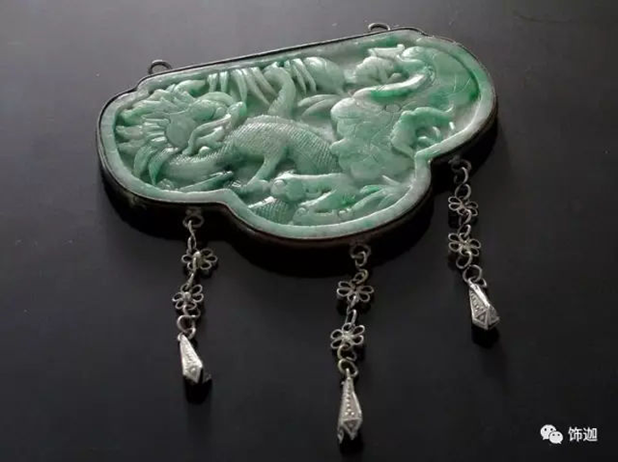

11.18-18:08
Susan Dods，加拿大资深的中国古董首饰收藏家，于2013年11月因再生障碍性贫血逝世，生前居住在加拿大安大略省，收藏中国古董首饰三十多年。今天我们来赏析Susan Dods的部分藏品，看外国友人对中国古董首饰是如何理解认识的？希望大家看到这些作品，能够看到外国友人对中国传统的热爱，让更多的人了解并爱上中国古董首饰。她虽然离开了这个世界，但是她的藏品还会继续流传下去，感动并震撼着所有热爱古懂珠宝的人们！音乐无国界，收藏有国界，但传承与保护却是全人类共同的心愿，愿她在天国快乐。
